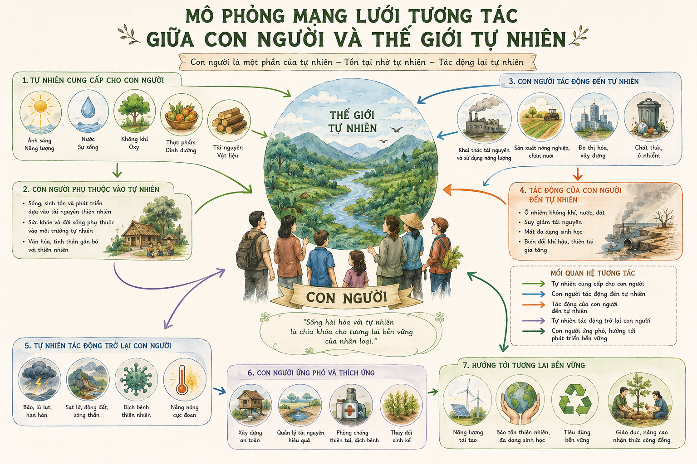
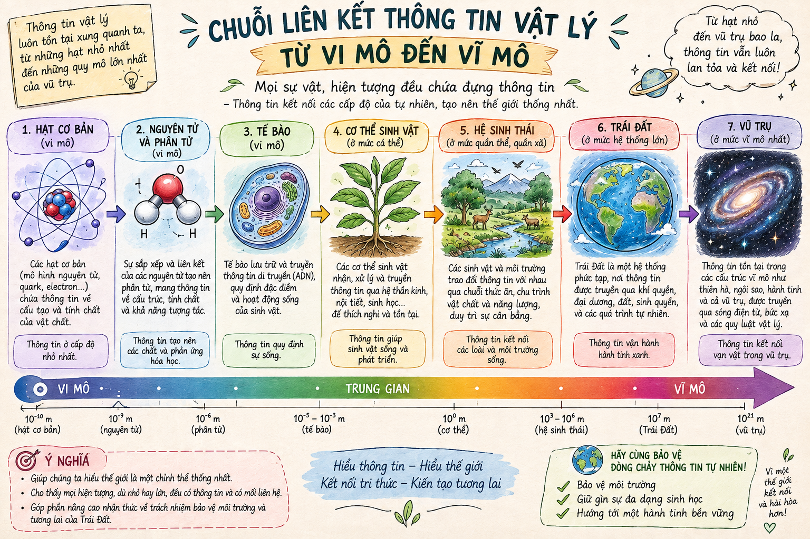

(Trích 7 bài học hay nhất về vật lý - Các-lô Rô-ve-li / Carlo Rovelli)
"Bạn suy nghĩ như thế nào về quan niệm cho rằng con người là thứ yếu của tự nhiên?"
Nội dung cốt lõi:
Con người không phải là một sinh thể độc lập đứng ngoài tự nhiên hay làm chủ tự nhiên một cách tuyệt đối, mà là một phần hữu cơ của tự nhiên. Chúng ta là một "nút" trong mạng lưới những sự trao đổi vô tận của vũ trụ.
Tại sao tác giả lại mở đầu bằng hàng loạt câu hỏi về vai trò, vị trí và giá trị của con người trong thế giới rộng lớn?

Hình 1: Mô phỏng mạng lưới tương tác giữa con người và thế giới tự nhiên (h1.png)Chú ý các cụm từ được lặp lại như "Chúng ta là...", "Tri thức của chúng ta...". Biện pháp này đóng vai trò gì trong việc thể hiện quan điểm?
Tri thức: Tri thức của chúng ta chung quy đều phản ánh thế giới. Cách kết nối giữa chúng ta và thế giới không phải là cái làm chúng ta đặc biệt hơn phần còn lại của tự nhiên.
Thông tin (vật lý): Là sự liên quan giữa trạng thái của vật này với trạng thái của vật khác. Mọi vật trong vũ trụ đều không ngừng trao đổi thông tin với nhau.
Tác giả đã dùng những ví dụ/bằng chứng nào để chứng minh câu: "Tri thức của chúng ta chung quy đều phản ánh thế giới"?

Hình 2: Chuỗi liên kết thông tin vật lý từ vi mô đến vĩ mô (h2.png)Các giá trị đạo đức, tình yêu thương, niềm vui, nước mắt hay sự hi sinh đều không nằm ngoài tự nhiên. Chúng là kết quả của quá trình tiến hóa xã hội kéo dài hàng triệu năm của loài người. Tự nhiên chính là "nhà của chúng ta".
| Phương diện | Giá trị đặc sắc |
|---|---|
| Nghệ thuật |
• Kết hợp nhuần nhuyễn giữa tư duy khoa học vật lý và cảm xúc triết học - văn học. • Lập luận chặt chẽ, sử dụng điệp từ, câu hỏi tu từ giàu sức gợi. • Ngôn ngữ tinh tế, hình ảnh so sánh giàu chất thơ. |
| Nội dung | Văn bản giúp con người định vị lại chính mình trong vũ trụ: không tự cao coi mình là trung tâm, nhưng cũng không hạ thấp giá trị tồn tại của bản thân. Con người là một phần tươi đẹp, tò mò và đầy khát vọng của tự nhiên. |
Tác giả Các-lô Rô-ve-li (Carlo Rovelli) sinh năm 1956, là nhà vật lý lý thuyết người Ý, nhà văn và là một trong những nhà sáng lập thuyết Hấp dẫn lượng tử vòng. Cuốn sách "7 bài học hay nhất về vật lý" của ông đã bán được hơn một triệu bản trên toàn thế giới và được dịch ra 41 thứ tiếng.
Tự tin khẳng định vị trí độc đáo của bản thân trong đời sống, đồng thời sống có trách nhiệm, chan hòa và yêu thương thế giới tự nhiên xung quanh vì đó chính là "ngôi nhà" nuôi dưỡng sự sống của chúng ta.
Khi đọc văn bản thông tin/nghị luận mang đề tài khoa học triết học, cần chú ý phân biệt giữa luận điểm cá nhân của tác giả và các bằng chứng thực chứng vật lý/sinh học được đưa ra để chứng minh.
Trả lời 10 câu hỏi để chinh phục đỉnh cao tri thức văn học & vật lý!
Trong bài viết, Carlo Rovelli đề cập: Giọt mưa chứa thông tin về đám mây. Hãy tính toán mật độ thông tin đơn giản: Nếu một giọt mưa có thể tích \( V = 0.05 \text{ ml} \) và mật độ khối lượng của nước là \( \rho = 1 \text{ g/ml} \), hãy tính số lượng phân tử nước \( H_2O \) chứa trong giọt mưa đó. (Cho biết \( N_A = 6.022 \times 10^{23} \text{ mol}^{-1} \), M làm tròn \( = 18 \text{ g/mol} \)).
Lời giải chi tiết:
• Khối lượng giọt nước: \( m = V \times \rho = 0.05 \text{ ml} \times 1 \text{ g/ml} = 0.05 \text{ g} \).
• Số mol nước \( H_2O \): \( n = \frac{m}{M} = \frac{0.05}{18} \approx 0.002778 \text{ mol} \).
• Số phân tử nước: \( N = n \times N_A = 0.002778 \times 6.022 \times 10^{23} \approx 1.67 \times 10^{21} \text{ phân tử} \).
Kết luận: Chỉ trong một giọt mưa nhỏ đã chứa khoảng \( 1.67 \times 10^{21} \) phân tử nước mang thông tin tương tác của môi trường khí quyển!
Xét một cân bằng hóa học mô phỏng quá trình trao đổi chất giữa sinh vật và môi trường: \[ A + B \xrightleftharpoons[k_2]{k_1} C + D \] Nếu nồng độ cân bằng lần lượt là \( [A] = 0.2 \text{ M} \), \( [B] = 0.5 \text{ M} \), \( [C] = 0.8 \text{ M} \), \( [D] = 0.5 \text{ M} \). Hãy tính hằng số cân bằng \( K_c \) của quá trình trao đổi này.
Lời giải chi tiết:
• Công thức tính hằng số cân bằng \( K_c \): \[ K_c = \frac{[C][D]}{[A][B]} \]
• Thay số vào biểu thức: \[ K_c = \frac{0.8 \times 0.5}{0.2 \times 0.5} = \frac{0.4}{0.1} = 4 \]
Kết luận: Hằng số cân bằng \( K_c = 4 \), cho thấy phản ứng ưu tiên diễn ra theo chiều thuận, thể hiện sự trao đổi vật chất chủ động.
"Nhận thức nào từ văn bản Về chính chúng ta mà bạn muốn mang theo trong hành trang cuộc sống của mình?"